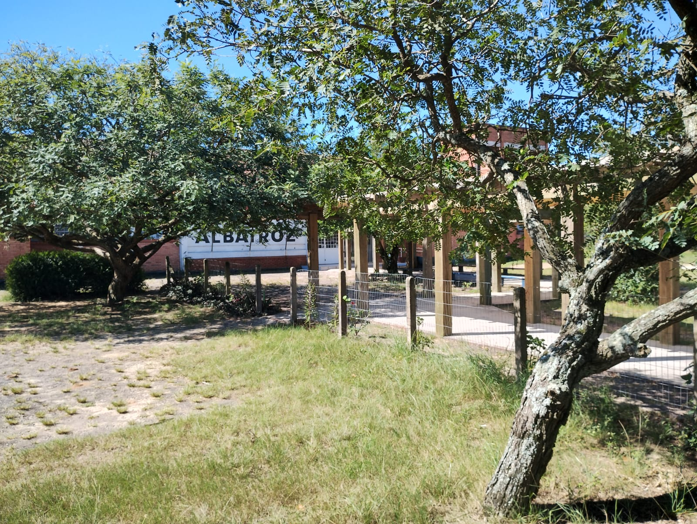

Um site de notícias da escola Albatroz.

Um site de notícias da escola Albatroz.
Data da Publicação: 03/05/2024 20:11:00
Autores:Lucas, Dullius, Lucas Andrades e Gabriel
A escola Albatroz, conhecida por sua excelência pedagógica, parece ter um ponto fraco: a carência de atividades culturais externas para seus alunos. Essa lacuna, percebida pelos próprios estudantes, levanta questionamentos sobre as causas e possíveis soluções para o problema.
Em busca de respostas, os alunos investigaram as razões por trás da escassez de eventos culturais. A principal conclusão aponta para a falta de recursos, especialmente transporte, para viabilizar as atividades. Essa limitação impede a participação dos alunos em projetos e eventos fora da escola, restringindo seu contato com diferentes áreas do conhecimento e expressões culturais.
Para superar esse desafio, os alunos propõem um plano de ação em três etapas:
Acredita-se que, com a implementação dessas medidas, a escola Albatroz poderá ampliar o leque de oportunidades culturais para seus alunos, proporcionando-lhes um aprendizado mais rico e completo. As programações culturais externas não apenas aumentam o conhecimento dos alunos, mas também contribuem para o desenvolvimento de habilidades socioemocionais e para a formação de cidadãos mais conscientes e engajados com a sociedade.
A união entre a comunidade escolar, empresas e poder público será fundamental para que a escola Albatroz possa abrir suas asas e voar alto na promoção da cultura e do conhecimento.